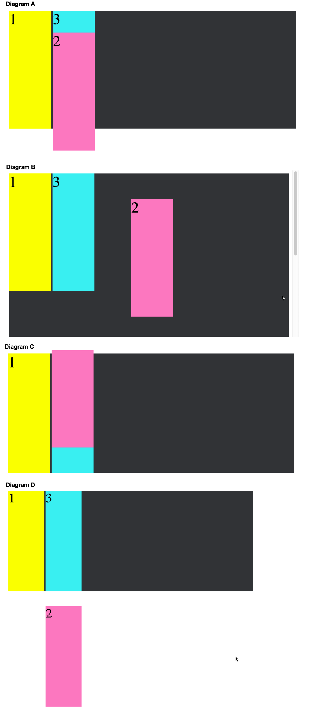

HOME
HOME
CSS Quiz
How do you import other CSS files into your CSS file?
@import 'custom.css';
What two attributes must a link element have to link a stylesheet in your HTML page?
<link rel="stylesheet" href="file.css" />
Order the specificity of the following:
- Last style for that element read in the browser
- The ID tag (eg: #main-header)
- The most element tags (eg: li, p, span)
- The most classes (eg: .myClass)
- The most ID tags (eg: #main-header)
- The most classes (eg: .myClass)
- The most element tags(eg: p, h1, li)
- The last style for that element read in the browser.
Which of the following has the most specificity?
- #main-header.large.on
- div#main-header.header
#main-header.large.on has more specificity:
- #main-header.large.on: 1-2
- div#main-header.header: 1-1
Write a selector combinator that that creates the following style:
- First Child
- Different parent - an ol
- Different parent - an ol
- Second Child
- Third Child
All decendants selector: space
ul li {
color: red;
}
Write a selector that will apply the same style to your body, div, paragraph, span, unordered list and line item elements.
The multiple items selection: comma
body, div, p, span, ul, li {
color: red;
}
What selector combinator would you use to create the following style:
- First Child
- Different parent - ol
- Different parent - ol
- Second Child
- Third Child
The direct child selector: >
ul > li {
color: red;
}
What are selectors like :hover and :focus, :link, or :visited called?
pseudo class
What is a pseudo-class?
A pseudo-class is a selector that selects elements that are in a specific state. e.g. :hover or :first-child
What do you call an element that actually introduces a whole new HTML element into the DOM?
::pseudo element
Pseudo-elements behave as if you had added a whole new HTML element into the markup, rather than applying a class to an existing element. They start with a ::
What are the following called?
- ::first-line
- ::before
- ::after
pseudo elements
Describe these attributes:
- font-size:
- font-weight:
- font-style:
- font-family:
- text-transform:
- text-decoration:
- text-align:
- font-size: size of the letters
- font-weight: boldness of the letters
- font-style: normal, italic, oblique
- font-family: actual font - like Arial, Helvetica, sans-serif
- text-transform: text casing
- text-decoration: underlining
- text-align: text justification (left, right, etc)
Define what the following do and their parameters:
- color:
- background-color:
- rgb()
- rgba()
- color: sets the font color; You can use names (lightblue), or hex (#e7e7e7) or rgb or rgba values
- rgb(): one of the methods to define a color. rgb takes 3 values representing the saturation of red, green and blue for your desired color
- rgba(): another method to define color. The final argument defines how transparent the color wil be
How many arguments does the border property require?
Three args: thickness, line style, and line color
- thickness (like 2px, or 3em...)
- line style(solid, dotted, dashed, double, groove, ridge, hidden ...)
- line color (red, rgb(255, 255, 255), etc.
What types of shadows can be applied?
text-shadow or box-shadow
What are the arguments of text-shadow or box-shadow?
offset-x, offset-y, blur-radius, color : You can also set your text-shadow to inherit, inital, or unset.
What does opacity do?
It sets the element's opacity. The lower the value the more transparent the element becomes. Values range from 0 (completely transparent) to 1;
What property do you need to set the image in the background?
background-image: url(<relative path or url>) or rel path to image
Why is using web fonts valuable?
Without loading web fonts, you are depending upon the browser to have the font you specify -- which may not be the case. Either downloading a font, or using a web font alleviates that problem and you can be assured the font will always be available.
What is a rem?
This is a relative length unit in CSS. It is based upon the root's value.
What is an em?
This is a relative length unit in CSS. It is based relative to its parent.
What are the 3 absolute length measures in CSS?
- pt: point
- px: pixel
- cm: centimeter
What does AJAX stand for?
Asynchronous JavaScript and XML
What is an AJAX request?
AJAX is a group of different technologies that work together to allow a website to communicate with a server in the background without requiring the website to reload in order to display new changes.
What are the advantages of using an AJAX request?
- We don't have to refresh the entire HTML page.
- It's a smaller amount of data that needs to be transferred.
Describe how AJAX relates to modern web programming.
- Asychronous: We don't lock up the page when we're waiting on a response. We're still able to interact and the response's data will be handled whenever it returns.
- JavaScript: The engine behind AJAX. We use JavaScript to make the request to the server, then we also use it to process the response and make any updates to the DOM that are needed based on this new data.
- XML: The original format of the data that was sent back on the response. Nowadays we will amost always be using JSON as the format.
Describe the different steps in an AJAX request/response cycle
- An event listener is set up to wait for a specific action that will trigger a request to our server. Clicking on a button or submitting a form would be a popular example
- When the event is triggered, we use JavaScript to formulate an appropriate request to a server. In our project we used fetch in order to send a request to a specific route on our server, along with an options object to indicate the methods, headers, etc., that differ from the default values, a body with necessary data, etc..
- The request is sent asynchronously to the server. The user is still able to interact with our application since the request is not blocking the call stack
- The server receives the request and does whatever it needs to do on its end to create/read/update/destroy data related to the request. After it performs the requested action, it creates a response and sends it back to the client. This is almost always going to be in a JSON format.
- The client receives the response and is able to parse the data and do any updates that it needs to do in the DOM. In our project we use a .then on our call to fetch, which allowed us to then convert the response's JSON into a usable POJO when the response came back. The data inside of this object is then accessible and used to manipulate the DOM.
Write an event listener in JavaScript that will fetch to 'http://localhost:3000/kitten/downvote', with the 'PATCH' method, handle the response and catch any errors.
document.querySelector('#downvote').addEventListener('click', () => {
fetch('http://localhost:3000/kitten/downvote', {method: 'PATCH' } )
.then(handleResponse)
.then(updateImageScore)
.catch(handleError);
});
Write another event listener to the above, but this time use the try/catch syntax.
document.querySelector('#downvote').addEventListener('click, async () =>
{
try {
const resJSON = await fetch('http://localhost:3000/kitten/downvote', {method: 'PATCH' });
const resObj = await handleResponse(resJSON);
updateImageScore(resObj);
} catch (e) {
handle (e);
}
Write the handleResponse for the fetch calls above.
const handleResponse = (response) => {
stopLoader();
clearError();
if (!response.ok) {
throw response;
}
return response.json();
};
Write the handleError function for the code above.
const handleError = (error) => {
if (error.json) {
document.querySelector('.error').innerHTML = `Error occured: ${errorJSON.message}`;
} else {
console.error(error);
alert('Something went wrong. Please try again!');
}
};
Write the updateImageScore for the fetch call above.
const updateImageScore = (data) => {
const { score } = data;
document.querySelector('.score').innerHTML = score;
};
In CSS, what are the different types of media that a media query can target?
- all: Able to work on every device
- print: Anytime a document is set to print mode, with the intention of printing
- screen: Any phone, tablet, computer, smart device, etc.
- speech: For use with speech synthesizers
Given the following CSS rule, write a media query that would change the
product-index container so the items appear in a vertical fashion for a viewport width less than or equal to
300px:
.product-index {
display: flex;
}
.product-index__item {
background-color: blue;
}
@media screen and (max-width: 300px) {
.product-index {
flex-direction: column;
}
}
Describe padding
The innermost part of the box model -- creating space around an element's content (like putting on a puffy jacket)
Describe margin
The space between one html element and another html element
What is the different between box-sizing: border-box; and
box-sizing: content-box
border-box includes the border and padding in the width and height; content-box does not;
div {
box-sizing: border-box;
width: 200px; /* including the padding and border */
padding: 50px;
border: 5px solid black;
/* total width of div is 200 px. */
}
div {
box-sizing: content-box;
width: 200px; /* not including the padding and border */
padding: 50 px;
border: 5px solid black;
/* total width of content is 200px */
/* total width of div is 310 px; -- 200px + 2 * 50px (padding) + 2 * 5px (border) */
Which is the default box-sizing: border-box or content-box?
content-box: Where the border and padding are NOT included in the width and height;
Describe position: fixed
Always relative to the document, not any particular parent, and are unaffected by scrolling.
Describe position: relative
Positioned relative to itself; i.e. the element is still in the flow of the document, but now left/right/top/bottom/z-index will work.
Describe position: absolute
Element is removed from the flow of the document and other elements will behave as if it's not even there whilst all the other positional properties will work on it.
Describe position: static
The default positioning of all elements
What are the 5 display property values?
- inline
- inline-block
- block
- grid
- flex
In the following list, choose which elements have "inline" display value:
- div
- span
- p
- a
- button
- ul
- textarea
Inline:
- span
- a
- button
- textarea
Which of the following has block as their default display value:
- div
- span
- p
- a
- button
- ul
- textarea
- div
- p
- ul
Describe the z-index
z-index refers to the "third dimension" i.e. stacking elements on top of each other. A higher z-index means bringing the element to the top.
How does flex-box lay out elements?
Flex box allows for easy responsive design by displaying items in a flexible container, where a container's height/width will adjust to the viewport.
What are the properties that control the distribution of elements in a flex-box?
- justify-content: alignment of items along a main axis; distributes extra space around/between items
- align-items: justify content for the cross axis
What properties specify the layout of children elements of a flex container?
- flex-grow: determines how much available space the element will take up (1*, 2*, 3*) So if you have 3 elements, and one is set to flex-grow: 3, this element gets 3 times the size, and the other elements get smushed to fit.
- flex-basis: initial item size; can set to auto which will evenly distribute the elements within the flex box
- flex-shrink: determines how much the flex item can shrink relative to the rest.
What does flex-direction do?
Defines how flexbox items are ordered within a flexbox container. Choices are: row, row-reverse, column, column-reverse
What does flex-wrap do?
Defines whether the flex items are forced in a single line, or can be flowed into multiple lines. Options: nowrap(default), wrap, wrap-reverse
What does align-self do?
It makes it possible to override the align-items value for a specific flex item. It accepts the same 5 values as align-items: flex-start, flex-end, center, baseline, stretch.
What does justify-content do in a flex-box?
It defines the alignment along the main axis. The values are: flex-start; flex-end; center; space-between; space-around; space-evenly.
What does align-items do in a flex-box?
It defines the default behaviro for how items are laid out along the cross axis. Options are: flex-start, flex-end, center, baseline, stretch.
What does order do in a flex box?
Sets the order of each item. For instance, if you have 5 boxes, you can set one box to be the 5th box which will push the first 4 boxes to the left and this box will be the 5th box.
How does grid layout lay out elements?
This layout style sections off your document into smaller sections that can be organized and customized via the css grid layout properties. Number of rows and columns, and their respective dimensions can be set.
Explain and use the shorthand versions of grid-column and grid-row to define how an element will span a grid layout
- grid-column: grid-column-start / grid-column-end
- grid-row: grid-row-start / grid-row-end
- can use grid-area with grid-template-areas to visualize grid layout
- grid-template-areas: each string represents one row
- use grid-areas name to define region element will take up
- grid-area: grid-row-start / grid-column-start / grid-row-end / grid-column-end
Explain the "fr" unit of measure
fr: fraction unit of measure used for creating grid layout
How do you specify the layout of the grid?
Use grid-template-columns, grid-template-rows, and grid-template properties to specify the layout of the grid using relative and absolute measures.
How do you label areas of a grid?
Use grid-template-areas
How do you assign an element to a grid area?
Use grid-area (with the grid template area name you previously assigned)
How do you create spans across multiple columns and rows?
Use grid-column-start / grid-column-end and grid-row-start / grid-row-end
How do you adjust items along the main axis (left, right, center, etc.)
Use justify-content: flex-start; flex-end; center
How do you adjust items along the cross-axis (up, down, center)
Use align-itmes: flex-start, flex-end, center, etc.
How do you set the areas between elements in the grid
These areas are called gutter areas. Use grid-column-gap, grid-row-gap, grid-gap
Describe in BEM terminology what the B stands for.
B: Block : standalone entity that is meaningful on its own
What are some examples of a block?
header, container, menu, navbar, input
What can a block identifier contain (ie letters, numbers, etc.)
Latin letters (X, M, IX, C, etc), digits, dashes
What does the "E" of BEM stand for?
Element - part of a block, no meaning on its own
Give some examples of an "E" element
Element: menu item, list-item, header title, input label
What letters, numbers, etc, can make up an element identifier?
Latin letters, digits, dashes, underscores.
What does the "M" of BEM stand for?
Modifier: A flag on a block or element used to change appearance or behavior
What are some modifiers that might be used on an "M" element?
- disabled
- color (ie yellow)
- size (ie big)
- fixed
How do you compose a BEM CSS class?
.block__elem
How would you compose a CSS BEM class with a modifier?
.block__elem--mod or .block--color-red
Create a BEM class name for a nav list-container with a shadow
nav__list-container--shadow
Create a BEM class name for a form that has modifiers theme-xmas and simple
form--theme-xmas and form--simple
Create a BEM CSS class for form that has elements input and submit. Submit has its own modifier disabled
form__input, form__submit, form__submit--disabled
Use the "hover" pseudo-class to make changes to a button, making the border 1px solid #386a7a and the color = #65c547b
div {
width: 100px;
height: 100px;
background: red;
transition-property: width;
transition-duration: 2s;
transition-delay: 1s;
}
div:hover {
width: 300px;
}
How would you make an element show animated changes?
Use the transition-property and transition-duration
.button {
transition: margin-top -5 2s;
}
What does the overflow CSS property do?
It specifies what should happen if content overflows an element's box. This property specifies whether to clip content or to add scrollbars when an element's content is too big to fit in a specified area.
Does overflow work for all block elements?
No. It only works for block elements with a specified height.
What is a default overflow value?
visible: The overflow is not clipped. It renders outside the element's box if it overflows. This is the default.
What does overflow: hidden do?
If the content is too large to fit in the box, the content that does not fit will not be displayed.
What are the overflow properties and values?
- visible: The overflow is not clipped. It renders outside the element's box. This is default
- hidden: The overflow is clipped, and the rest of the content will be invisible
- scroll: The overflow is clipped, but a scroll-bar is added to see the rest of the content
- auto: If overflow is clipped, a scroll-bar should be added to see the rest of the content.
- initial: Sets this property to its default value.
- inherit: Inherits this property from its parent element.
What is the overflow-x property?
overflow-x specifies whether to clip the content, add a scroll bar, or display overflow content of a block-level element, when it overflows at the left and right edges.
What is the overflow-y property?
The overflow-y property specifies whether to clip the content, add a scroll bar, or display overflow content of a block-level element, when it overflows at the top and bottom edges.
What effect does position: fixed have on an element?
The element is removed from the page flow and is typically positioned relative to the document itself and not to an ancestor element. It is positioned using the top, right, bottom and left properties. The element remains in the same spot on the page, regardless of viewport size or scrolling.
Which of the following diagrams shows the correct layout of the elements
given
their margin and padding settings shown in the CSS below:
<body>
<div class="container">
<div class="element"></div>
</div>
</body>
CSS
.container {
background-color: #2B2D2F;
width: 300px;
height: 100px;
}
.element {
background-color: hotpink;
width: 100px;
height: 80px;
padding: 10px;
margin: 0 auto;
}
Diagram D
Given the following HTML and CSS, which of the following diagrams shows the
correct layout of the absolutely positioned element?
<body>
<div class="container">
<div class="element" id="element-1">1</div>
<div class="element" id="element-2">2</div>
<div class="element" id="element-3">3</div>
</div>
</body>
CSS
.container {
background-color: #2B2D2F;
}
.element {
display: inline-block;
width: 100px;
height: 280px;
font-size: 36px;
}
#element-1 {
background-color: #FFFF00;
}
#element-2 {
background-color: #FF69B4;
position: absolute;
top: 60px;
}
#element-3 {
background-color: #00EEEE;
}
Diagram A
Given the following HTML and CSS, which of the following diagrams shows the correct layout of the absolutely positioned element contained in a relatively positioned element?
HTML
<body>
<div class="container">
<div class="element" id="element-1">1</div>
<div class="element" id="element-2">2</div>
<div class="element" id="element-3">3</div>
</div>
</body>
CSS
.container {
background-color: #2B2D2F;
position: relative;
}
.element {
display: inline-block;
width: 100px;
height: 280px;
font-size: 36px;
}
#element-1 {
background-color: #FFFF00;
}
#element-2 {
background-color: #FF69B4;
position: absolute;
bottom: 60px;
}
#element-3 {
background-color: #00EEEE;
}

Diagram C
What position setting completely removes itself from the document flow, and what is that position dependent upon?
position: absolute;
- Completely removes the element from the document flow.
- Elements around it position themselves as though the element didn't exist.
- Absolute in conjunction with top, bottom, left, right, reference the parent element who's position is NOT static.
- If there is no parent element that is NOT static, then the position of top, bottom, etc, will be relative to the root document.
- Position absolute will scroll out of view.
What position setting will allow you to position the element with (top, bottom, left, right) relative to its normal position?
position: relative
position: relative does not change anything on its own, without setting top, bottom, left, and right.
What is the most common use for position: relative?
Setting the parent element to a non-static value, such that child elements may be positioned relative to this parent. Any non-static setting will allow this, but relative is the most common choice.
If you want to set an element to a specific position on the page, never to have its position interrupted by any other element, what position setting would you choose?
position: absolute
Remember, with position absolute a parent must be set to a non-static setting. If not, the element will be positioned relative to the document root. Also remember, this position setting will allow the element to scroll out of view.
What would you use if you want to lock an element into a specific position, not dependent upon a parent element, which will remain in the same position regardless of scrolling?
position: fixed
Again note: Position fixed is similar to position absolute BUT rather than positioning itself relative to a parent element, it positions itself relative to the document and a specific on-screen position. However, unlike position absolute, when scrolling begins, this element will not move with the scrolling.
What is the default positioning setting?
position: static is default. However, the element set to position static will not be able to be used to position its children.
What position setting initially is relative, but as you scroll it becomes fixed to the top of the page?
position: stickey
This is a combination of both relative and fixed position. While you scroll, this position remains relative. But as you scroll the parent out of view this becomes fixed position, never scrolling out of view.
How do you create a grid?
Set the grid container class's display to grid or inline-grid
How do you put items into the grid?
All direct children of the grid container automatically become grid items.
What are grid container grid settings?
.grid__container {
display: grid;
grid-column-gap: 50px;
grid-row-gap: 50px;
grid-gap: 50px 100px; /* row, column */
grid-template-columns: repeat(4 1fr) /*can use px, or auto or combined to specify number of cols */
grid-template-rows: 80px 200px /* ditto above */
justify-content: space-between; /*space-around, center, start, end, space-evenly */
align-content: space-around; /* space-evenly, space-around, space-betwen, center, start, end */
grid-template-areas: 'area area . . .' /* (template area "area" uses two of 5 cols) */
'area1 area2 area3 area4 area5' /* to name areas used in grid items to indicate where item goes */
}
.grid__item {
grid-column-start: 1;
grid-column-end: 3; //or use
grid-column: 1 / span 3; //start on column 1, span 3 columns
1 / 3; // start on 1, end on 3
grid-row-start: 1;
grid-row-end: 3;
grid-row: 1 / span 3; //start on row 1, span 3 rows;
1 / 3; // start on row 1, end on row 3;
grid-area: area1; // named area related to grid-template-areas on grid__container
1 / 2 / 5 / 6 // ( row start, col start, row end, col end)
}
What are the rules for using a flex box?
- A flexible layout must have a parent element with the display property set to flex.
- Direct child elements of the flexible container automatically become flexible items.
What properties are available on a flexible container and on a flex item?
.class__container {
display: flex;
flex-direction: row | row-reverse | column | column-reverse
flex-wrap: nowrap | wrap | wrap-reverse;
flex-flow: column wrap; //shorthand for flex-direction and flex-wrap
justify-content: flex-start | flex-end | center | space-between | space-around | space-evenly | left | start
align-items: flex-start | flex-end | center | stretch | baseline
align-content: flex-start | flex-end ... same as justify content = aligns container's lines within when there is extra space in cross-asix
}
.class_childItem {
order: 1 | 2 | 3 | 5 | ... 99 //default: 0;
flex-grow: 1; //grow twice as large as other containers; 3 times, 4 times, etc.
flex-shrink: 3; //default 1;
flex-basis: | auto /* default auto: default size of elt before remaining space is distrib. 20%, 5rem, auto, etc.
flex: none | [ <'flex-grow'> <'flex-shrink'>? || <'flex-basis'> ] //shorthand for flex-grow, flex-shrink and flex-basis; 2nd & 3rd properties are optional. Defualt is 0 1 auto;
align-self: flex-start | flex-end | auto | center | baseline
}